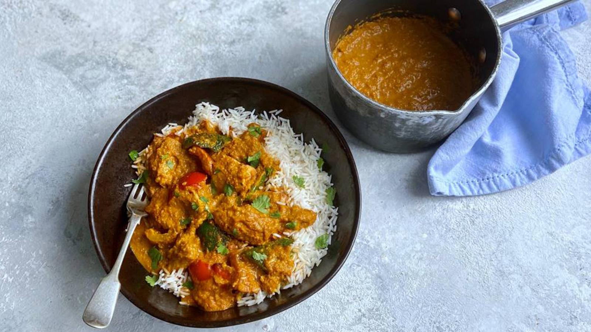

A combination of peanut butter and the blend of spices gives this curry a delicious nutty flavour.
This curry is quick to prepare and cook and pairs well with rice or naan bread.
- 300g Chopped Chicken Breast
- 150g Chopped Onion
- 150g Chopped Peppers
- 100g Peanut Butter
- 400g Tin of Chopped Tomatoes
- 2 Tsp Garlic Powder
- 1 Tsp Cinnamon
- 1 Tbsp Ground Cumin
- 1 Tsp Chilli Powder
- 2 Tsp Paprika
- 2 Tsp Brown Sugar
- 1 Tsp Salt
- 2 Tbsp Lemon Juice
- Fry off the onions and peppers till browned.
- Add the chicken breast and fry till brown.
- Add the chopped tomoatoes and peanut butter then stir well till combined.
- Add the powdered spices and stir to combine.
- Finally add the lemon juice and then leave to simmer until thickened.
- Serve with rice or naan bread.